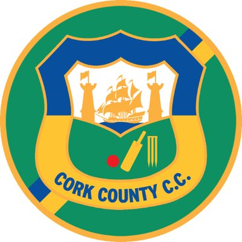

In the summer of 2012, I began playing cricket with Cork County Cricket Club, the team based in the Mardyke in Cork. Since then myself and the club have had great success winning the Munster Premier League every year. I have represented the club at all levels and captained the U-15 and U-17 levels. I have also represented the Munster Cricket Union side the Munster Reds in the inter-provincial series against the Northern Knights and the Leinster Lightning.
| Year | Accomplishment |
|---|---|
| 2012 | Start playing Cricket |
| 2013 | Won the U-13 Munster Cricket League |
| 2014 | Got selected to represent Munster for the first time. |
| 2015 | Won the Munster Minor Cup with the club for the first time since 1996. Vice Captain for the game. |
| 2016 | Won the Munster Schools Senior Cup and did the League and Cup double with the club. |
| 2017 | Became Captain of the school cricket team. Won the Munster Schools Senior Cup for the 4th time in 5 years |